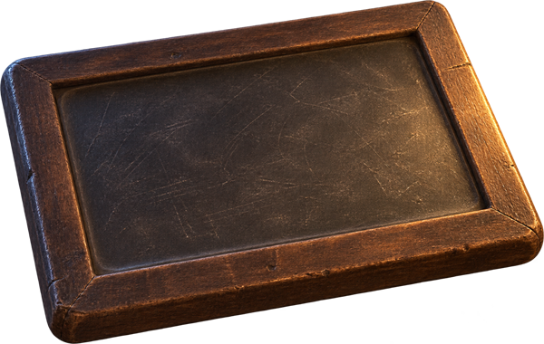
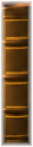

ENTOtology

Ward cases
Today
- ENT — otitis media cases
- Ophthalmology — red eye review
- Neuropsychiatry — seizure pathways
Studyplan

OphthalmologyAnterior eye
NeuropsychiatrySeizure care
PediatricsChild health

Ward cases
